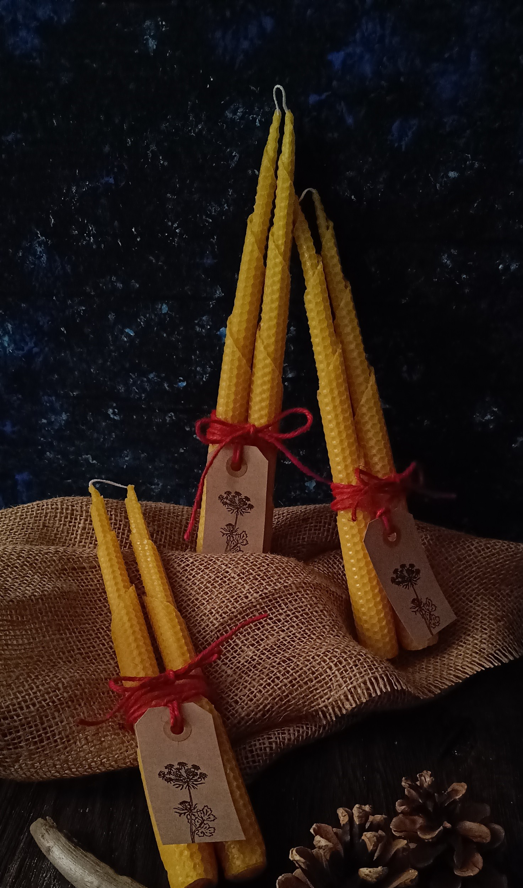
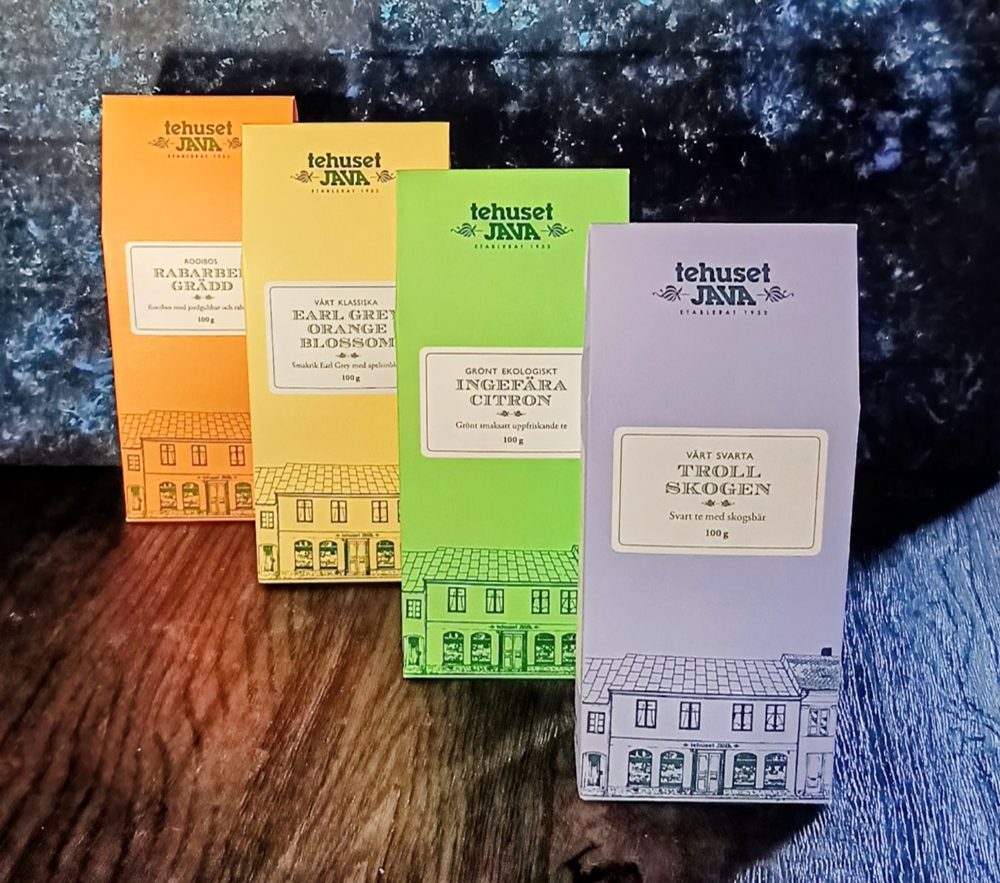
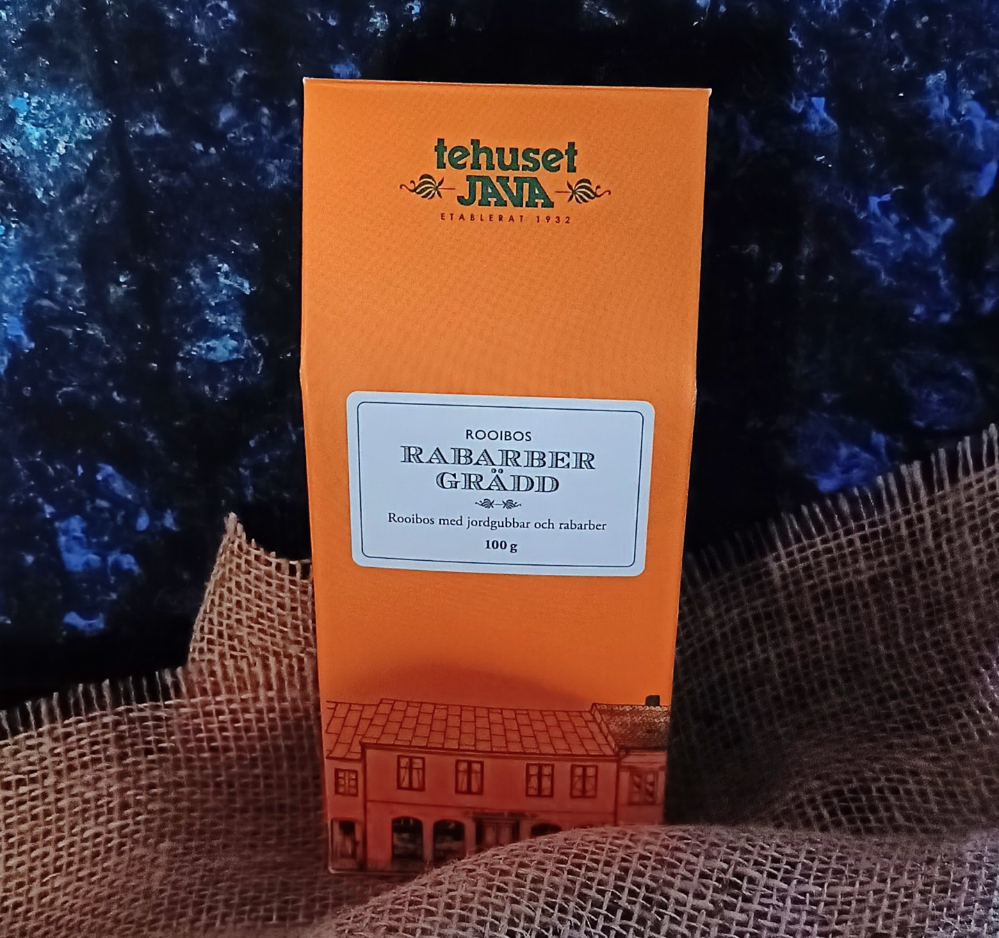
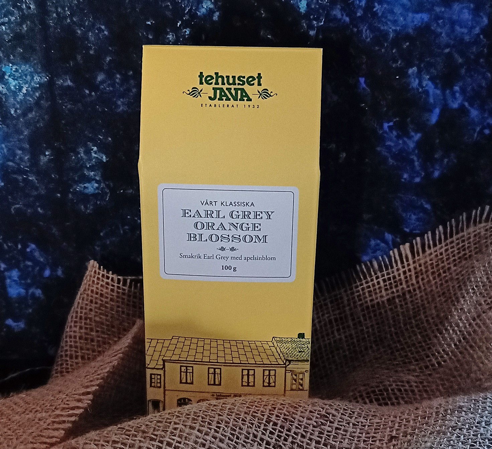
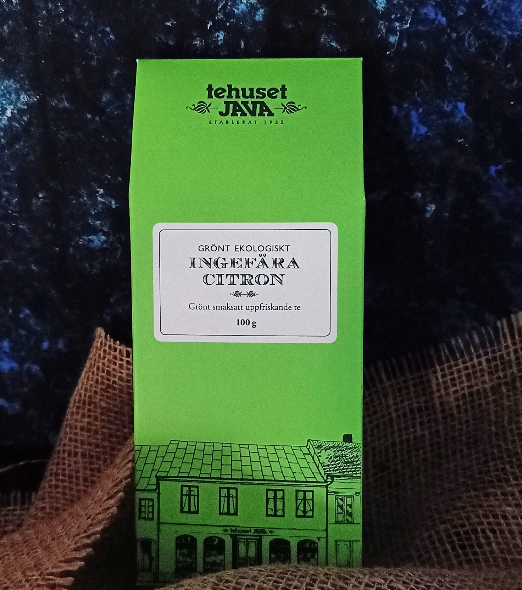
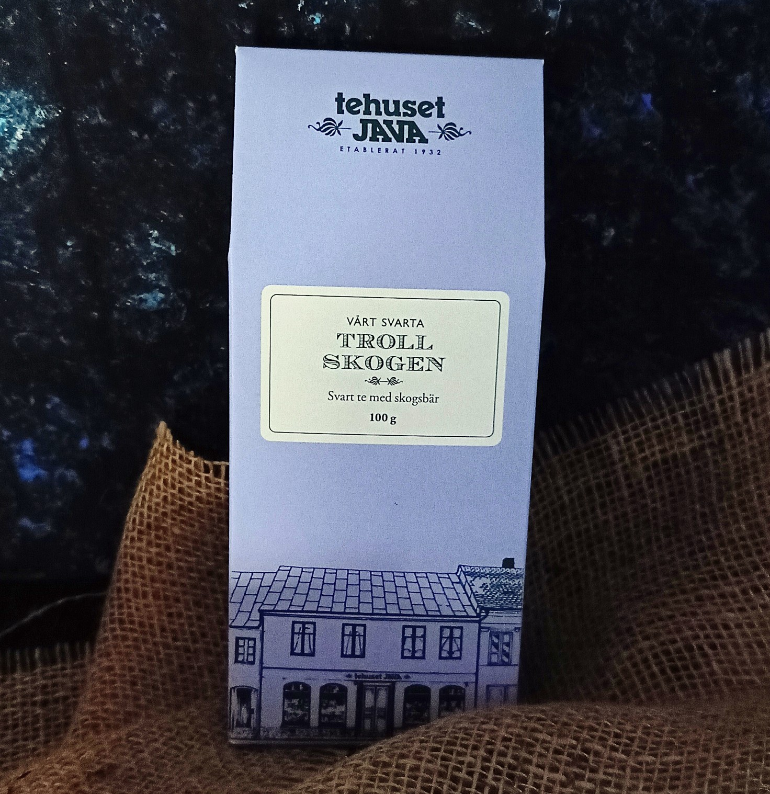
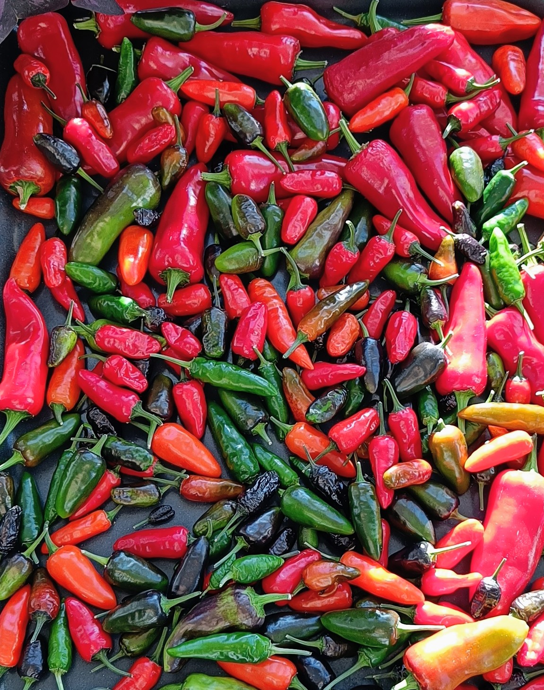
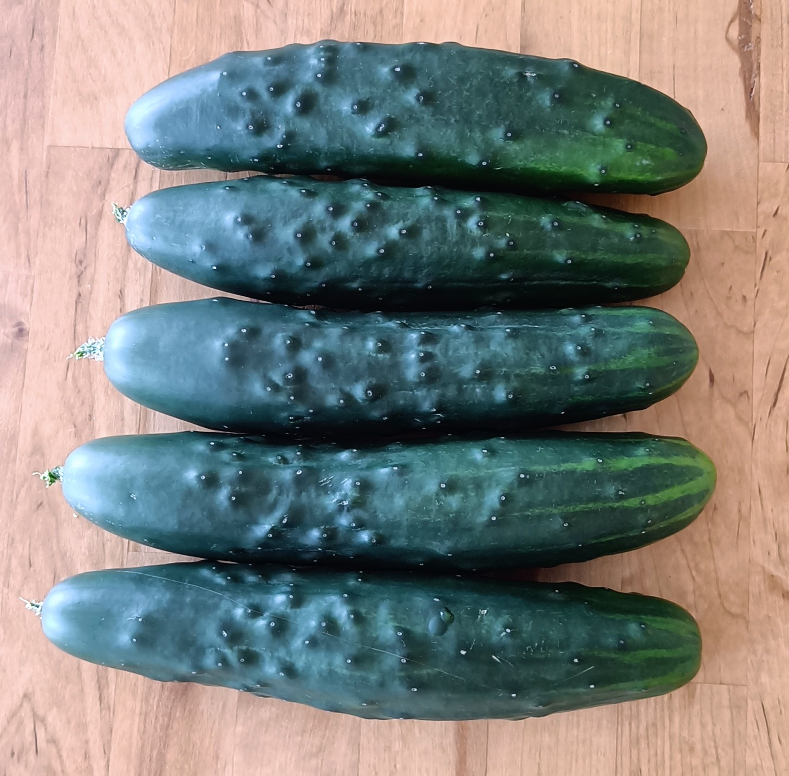
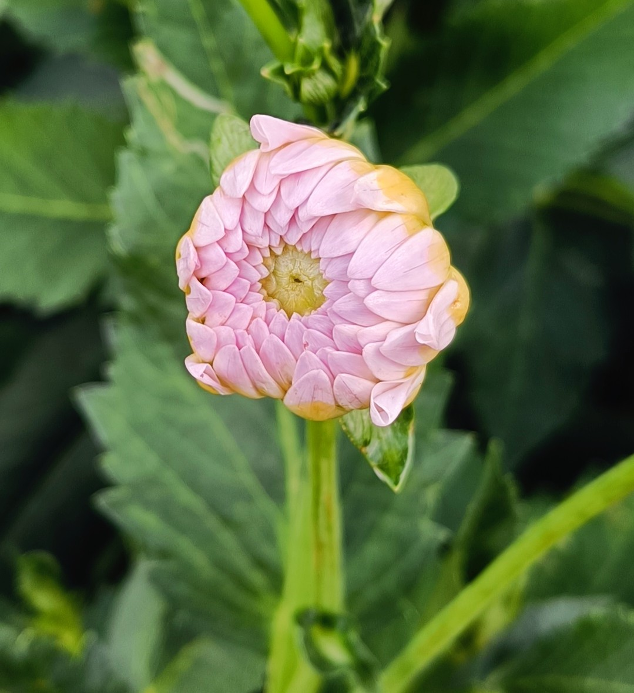

Gårdsbutik
Välkommen till gårdsbutiken!
Här hittar du produkter i säsong som är odlade eller tillverkade med omtanke och hållbarhet.Vad vi erbjuder
I butiken finns härodlade grönsaker, färska plantor, blommor, handgjorda hantverksprodukter, presenter och andra säsongsbaserade varor. Jag strävar efter hög kvalitet och produkter du kan njuta av.
Min filosofi
Jag vill skapa en plats där människor kan handla med glädje och trygghet, veta att allt är noga utvalt och att hållbarhet står i centrum.
Öppettider
Jag håller öppet efter överenskommelse eller när vädret är bra. För aktuella öppettider, se sociala medier vilket finns länkat på första sidan. Hör av dig via mail eller i sociala medier så håller jag öppet för dig! 🤗
Var finns butiken
Butiken finns i Kolbäck, en lugn ort ca två mil utanför Västerås.
Hitta hit









Betalningsalternativ
Privatperson - Swish
Företag - faktura